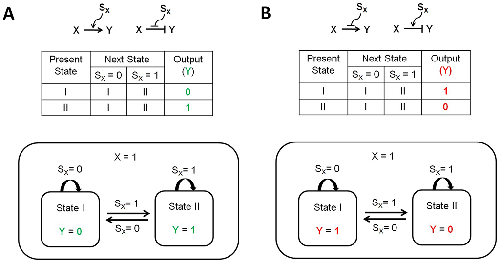

Simple Gene Network Statechart web service is the basic building block for the complex gene network statecharts. For this statechart, We need to provide the initial state of Gene X (either 0 or 1) and the Signal Value(either 0 or 1) along with the control sign which can be either Activation(1)(fig.A) or Inhibition(0)(fig.B) which results in determining the next state of Gene Y.
